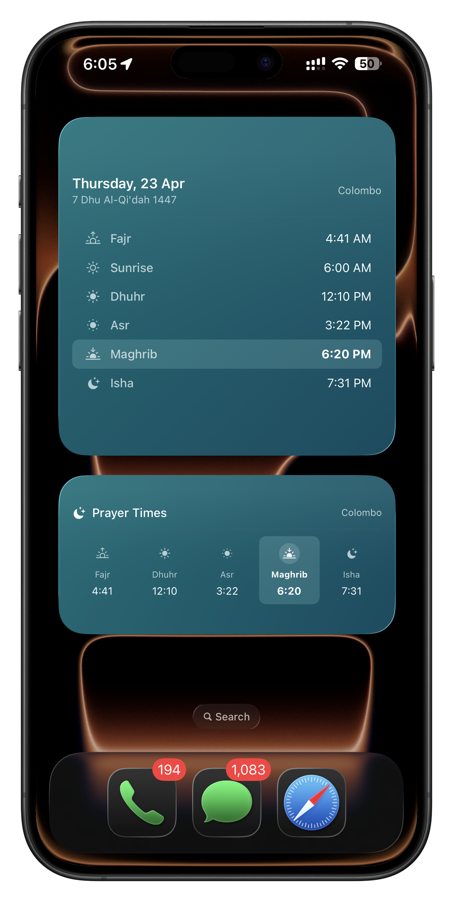

01
Widgets that keep salah visible.
Lock screen and home screen widgets help you glance at the next prayer without opening the app.
- Next prayer countdown
- Daily prayer schedule
- Designed for quick checks